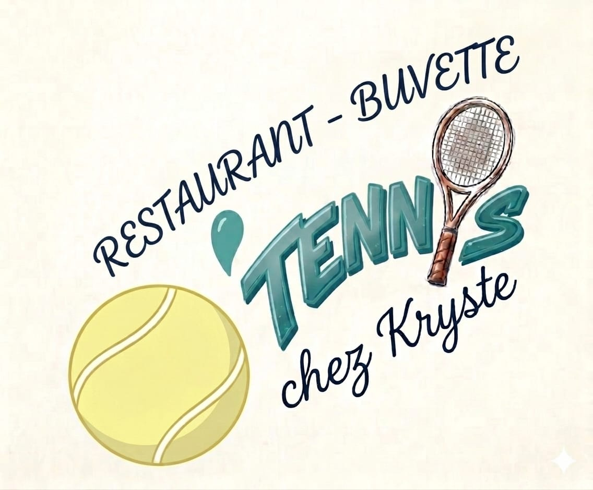

O’Tennis · Restaurant & Buvette
Espace gérant
Les bonnes informations, à jour pour vos clients.
- La carte
Modifier un plat, une boisson ou un prix. - Les horaires et le contact
Mettre à jour les heures, le téléphone et l’adresse. - Les textes et les photos
Présenter le restaurant et annoncer les nouveautés.
Votre espace sécurisé s’ouvre dans Pages CMS. Utilisez l’adresse email avec laquelle vous avez été invité.
Après l’enregistrement, les changements apparaissent sur le site une fois sa publication terminée. Cela peut prendre quelques minutes.
← Retour au site du restaurant